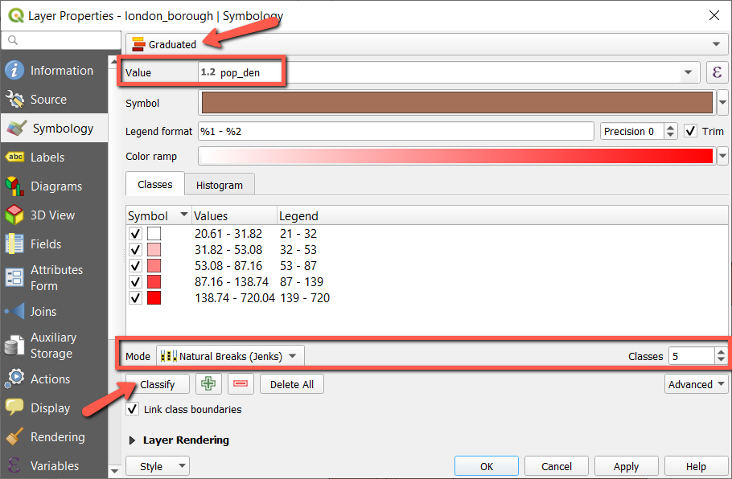
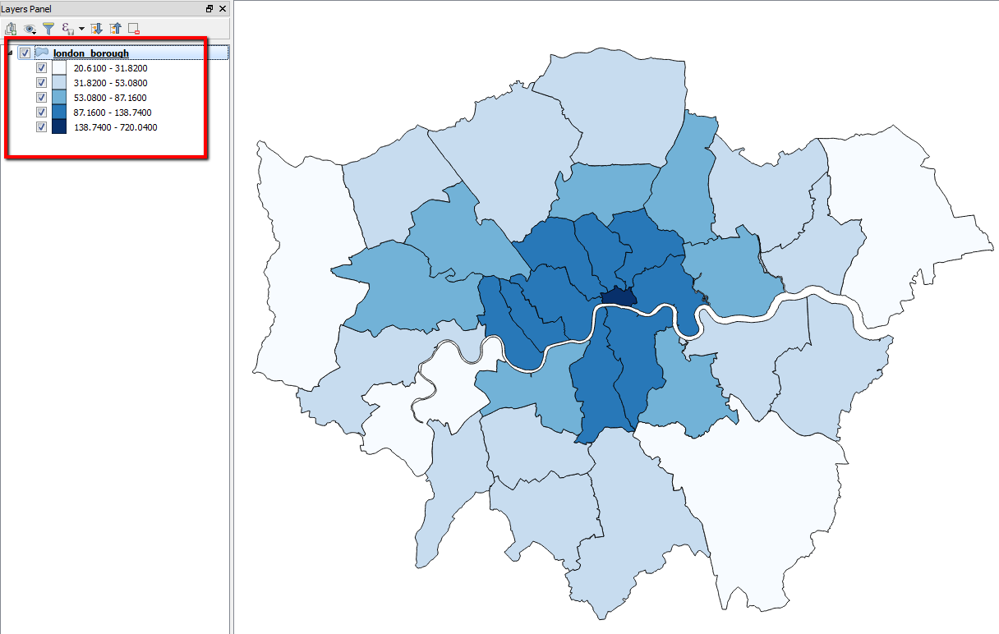
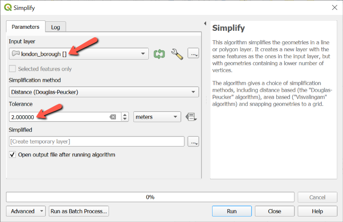
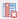
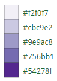

Lab 3. Interactive Choropleth Map
Due: 11:59 pm, Thursday, 9/24
Overview
In this lab, we will create an interactive choropleth map using GeoJSON data. We will add mouseover effects and display attribute information as popups/tooltips. Scroll down to the bottom for an example.
Please read the instructions carefully (including the explanations of each step) and complete the assignment in the Deliverables section. Note you will need to acquire your own data (a shapefile with attribute values you are intended to map) for this lab.
Set Up Basemap
- Before start, create a new file folder (e.g., lab3) for saving the html document and associated data file.
- Open your code editor and add the following lines to set up the basemap using the Carto light canvas.
If you are interested in using different basemaps, refer to this OpenStreetMap wiki page which privides a list of tile maps with their url and attribution.<!DOCTYPE html> <html> <head> <title>Lab 3</title> <link rel="stylesheet" href="https://unpkg.com/leaflet@1.6.0/dist/leaflet.css" integrity="sha512-xwE/Az9zrjBIphAcBb3F6JVqxf46+CDLwfLMHloNu6KEQCAWi6HcDUbeOfBIptF7tcCzusKFjFw2yuvEpDL9wQ==" crossorigin=""/> <script src="https://unpkg.com/leaflet@1.6.0/dist/leaflet.js" integrity="sha512-gZwIG9x3wUXg2hdXF6+rVkLF/0Vi9U8D2Ntg4Ga5I5BZpVkVxlJWbSQtXPSiUTtC0TjtGOmxa1AJPuV0CPthew==" crossorigin=""></script> </head> <body> <div id="map" style="height: 500px"></div> <script type="text/javascript"> var map = L.map('map', { center: [51.48,-0.07], zoom: 10 }); L.tileLayer('https://cartodb-basemaps-{s}.global.ssl.fastly.net/light_all/{z}/{x}/{y}.png', { attribution: 'Map tiles by Carto, under CC BY 3.0. Data by OpenStreetMap, under ODbL.', maxZoom: 11, minZoom: 5 }).addTo(map); </script> </body> </html> - Then, save the document as
map3.htmlin your lab 3 folder. Please remember to specify the file extension as .html to make it work. Your map should look like:
Yep, I will map London as an example this time!
Prepare and Add GeoJSON Layer
In Lab 2, we have introduced a way to add markers manually using their coordinates. But you may wish to work with more complex spatial features as in a desktop GIS. So we introduce GeoJSON, which is a format for encoding a variety of geographic data structures (https://geojson.org).
- Getting Data: click here to download the sample shapefile I am using in this lab. But please note that you will need to find your own data for the assignment submission as stated in the Deliverables section.
- Extract the zipped data folder to your desired directory.
- Launch QGIS Desktop. If you haven't installed QGIS, click here to download and install it on your own computer.
- In QGIS, go to Layer (top menu bar) > Add Layer > Add Vector Layer. Then browse to the directory where you have extracted the shapefile and select the london_borough.shp file to open it in QGIS.
- The spatial units (polygons) of this layer are the boroughs in the greater London area.
- Right-click the layer in the Layers Panel and select Open Attribute Table. The shapefile contains three fields/attributes: NAME, pop_den (population density in people per hectare 2011), and per_indian (percent Indian population 2011).
- Although we will be mapping the data on the web eventually, it is helpful to first explore the data in QGIS to help determine the details for rendering the data on the web. Right-click the layer again and select Properties, then choose the Symbology tab (see image below).
- Use Graduated Symbol to render the data (this option is used when making choropleth maps).
- For Value, use the drop-down button to choose the attribute you are intended to map,
pop_denin my example. - Under Classes, you could pick the mode of data classification (I used Natural Breaks) and number of classes (I used 5). Make sure to click the Classify button or your map may disappear.
Wondering what the different modes mean? Check out this link. - Click OK to apply the selected style. And you should see an example of the london boroughs map rendered as a choropleth map.
- Pay attention to the legend of the map, jot down the approximate break numbers, we will need these values later when adding the data to the web map. For example, I take notes of the four integer values of 32, 53, 87, 139 for later use.
  - To maximize the rendering speed, there are two imporant steps we should always perform in QGIS before exporting a shapefile to GeoJSON: (1) simplify geometry; and (2) delete unwanted fields in the attribute table. I will show you how to do so in the following steps:
- Simplify geometry
- In QGIS, go to Vector > Geometry Tools > Simplify, use london_borough as the Input layer (see image below).
- For Simplification method, we will use the default Distance based algorithm, which removes vertices if the length of the tentative simplified line is smaller than the specified tolerance.
- For Tolerance, I used 2 meters. Basically, higher tolerance values would generate simpler features (smaller file size) but also lose some details. For your own map, you may want to consider the map scale and experiment a few options to determine the "best" tolerance value.
- For Simplified results, we will leave it to Create temporary layer as we will export the temporary layer to a geojson file shortly.

- Simplify geometry
- Delete unwanted fields
You could delete fields of a layer within its attribute table (right-click the Simplified layer in the Layers Pane and select Open Attribute Table. Turn on editing mode within the table using the Toggle Edit button . Then click the Delete field button  and select the fields you want to delete and click OK. I want to map population density here so I will delete the per_indian field.
Turn off the editing mode and click Save to confirm your changes. Close the attribute table.
var data = data.js to your lab working folder (where your html file is saved). Note the file extension is .js.
Here is a copy of the (data.js) file I created.
head section, include the following line so that we could use the data.js data in our map:
<script type="text/javascript" src="data.js"></script>script section (inside body), include the following line to add the data (AFTER adding the tile layer).
L.geoJson(data).addTo(map);Add Colors
- Now, we will color the London boroughs by their population density values, e.g., darker color for higher density and lighter color for lower density. Recall the population density data will come from the
pop_denattribute/property of the data. - For choosing colors, I recommend ColorBrewer by Dr. Cynthia Brewer, where you can pick a color scheme and get the correponing HTML color codes directly. I will use the 5-class Purples here:
 - Once we have the color codes, we need to create a javascript function (we call it
getColor) that returns a color based on attribute values, i.e.,pop_den.- We will define multiple JS functions in this lab for adding styles and interaction to the geojson layer. For the purpose of this class, you will only need to modify the functions to fit your own data. But if you would like to learn more about JS functions, check out this w3schools tutorial.
Place the following lines to define the function BEFORE adding the GeoJSON data (ABOVE the line ofL.geoJson):
In the above lines, the numbers (e.g., 32, 53, 87, 139) are the break values used to classify the population density (people/hectare) of the London boroughs. Recall that I usedfunction getColor(value) { return value > 139 ? '#54278f': value > 87 ? '#756bb1': value > 53 ? '#9e9ac8': value > 32 ? '#cbc9e2': '#f2f0f7'; }Natural Breaksas the classification mode in5 classes.
For your own data, you may use QGIS to help determine the break values.
Let's take a close look at the function: if the value (population density) is greater than 139 people/hectare, the darkest purple (#54278f) will be used. If the value is less than 139 but greater than 87, use the second dark purple (#756bb1), and so forth. The question mark?and colon:are used together to create a conditional statement (We will talk about this next week).
It is okay if you cannot fully understand this. For your own data, you will simply need to replace the break values and colors. You may add or remove classes. Just make sure to follow the syntax carefully. - Note: defining the functions won't add/change anything to the map until the functions are used for adding the layers through Leaflet functions.
- Following the
getColorfunction, we define another function calledstylefor the GeoJSON layer so that its fill the boroughs with colors based on the population density attribute:
Note pop_den is the field name for the population density values. You will need to use the corresponding field name when mapping your own data.function style(feature){ return { fillColor: getColor(feature.properties.pop_den), // pop_den is the field name for the population density data weight: 2, opacity: 1, color: 'gray', fillOpacity: 0.9 }; }
For the function options, you may be able to tell what they do by their names, e.g.,fillColoris to define the fillcolor of the features using thegetColorfunction,weightis to define the weight of the boundary lines, etc. You may try to customize the appearance by adjusting the corresponding values.
Leaflet actually offers other options for customizing vector styles, click here to find out more. Note for the deliverables, you will need to use dashed line for the polygon boudnaries to demonstrate your skill. - To use the functions we just defined, we need to MODIFY the line of
L.geoJsonto:
Please make sure the two functions are defined aboveL.geoJson(data, { style:style }).addTo(map);L.geoJson.
Now we have a map with colors (sample code) !
Add Legend
- Next, we will add legend to the map (an essential component of all maps). In the
headsection of your html document, place the following lines to define the appearance of the legend (read the comment lines for explanations):<style> /* Optional: adjust the values below to change the appearance of the legend */ .legend { padding: 6px 8px; line-height: 18px; background: rgba(255,255,255,0.9); box-shadow: 0 0 15px rgba(0,0,0,0.2); border-radius: 5px; } /* Optional: adjust the values below to change the appearance of the legend color boxes */ .legend i { width: 18px; height: 18px; float: left; margin-right: 8px; opacity: 0.7; } </style> - Next, in the
scriptsection INSIDEbody, add the following lines AFTERL.geoJsonto define how the legend will be created in your map (see the comment lines for explanation):
The above functions for defining the legend may be too much for you to understand. But you can simply replace some small portions according to the comment lines when mapping your own data.var legend = L.control({position: 'bottomright'}); // Try the other three corners if you like. legend.onAdd = function (map) { var div = L.DomUtil.create('div', 'legend'), grades = [0, 32, 53, 87, 139]; // The break values to define the intervals of population, note we begin from 0 here div.innerHTML = '<b>Population Density <br> 2011 <br></b>'; // The legend title (HTML-based), in this case it's Population Density 2011 // Loop through our the classes and generate a label with a color box for each interval. // If you are creating a choropleth map, you DO NOT need to change lines below. for (var i = 0; i < grades.length; i++) { div.innerHTML += '<i style="background:' + getColor(grades[i] + 1) + '"></i>' + grades[i] + (grades[i + 1] ? '–' + grades[i + 1] + '<br>' : '+'); } return div; }; legend.addTo(map);
The legend will be created at the bottom right corner of your map with the defined styles and content (sample code): Now we have the choropleth map and legend created, not bad. However, it would be better to add more interaction to make the most of web-based mapping.
Add Mouseover Effects
Let's make the boroughs highlighted visually when they are hovered with a mouse.
- We will first define a function for the mouseover effect, call it
highlightFeature. Place the following lines BEFORE adding the geojson. Please read the comment lines for explanations.function highlightFeature(e) { // Get access to the feature that was hovered through e.target var feature = e.target; // Set a thick grey border on the feature as mouseover effect // Adjust the values below to change the highlighting styles of features on mouseover // Check out https://leafletjs.com/reference-1.3.4.html#path for more options for changing style feature.setStyle({ weight: 5, color: '#666', fillOpacity: 0.7 }); // Bring the highlighted feature to front so that the border doesn’t clash with nearby states // But not for IE, Opera or Edge, since they have problems doing bringToFront on mouseover if (!L.Browser.ie && !L.Browser.opera && !L.Browser.edge) { feature.bringToFront(); } } - Next, we will define another function to reset the feature to its original style on mouseout. Place the following lines AFTER the
highlightFeaturefunction.var geojson; // define a variable to make the geojson layer accessible for the funtion to use function resetHighlight(e) { geojson.resetStyle(e.target); } - Now, we are ready to apply the two functions as the layer's mouseover and mouseout effects. Following the two functions, add another function to apply the effects on mouseover and mouseout.
function onEachFeature(feature, layer) { layer.on({ mouseover: highlightFeature, // Do what defined by the highlightFeature function on mouseover mouseout: resetHighlight, // Do what defined by the resetHighlight function on mouseout }); } - Next, MODIFY the
L.geoJsonline to the following:
Note we have assigned the geojson layer to thegeojson = L.geoJson(data, { style: style, onEachFeature: onEachFeature }).addTo(map);geojsonvariable defined earlier. And theonEachFeatureoption is use to apply the mouse effects to the geojson layer.
You map should have the mouseover effects added: (sample code)
Add Tooltips
To finalize the map, we will add popup/tooltip to each borough with specific attribute information, e.g., borough name and population density.
- The
bindPopupmethod we have introduced in Lab 2 can also be used for a geojson layer. MODIFY theL.geoJsonpart to the following:
Again, only text/strings are acceptable as popup content. Note how we are using HTML to format the popup information.geojson = L.geoJson(data, { style:style, onEachFeature: onEachFeature }).bindPopup(function (layer){ return layer.feature.properties.NAME + '<p style="color:purple">' + layer.feature.properties.pop_den.toString() + ' people/hectare </p>'; }).addTo(map);layer.feature.properties.NAMEreturns the NAME attribute of the layer (name of boroughs) andlayer.feature.properties.pop_den.toString()returns and converts the population density (numeric values) to strings so that it can be displayed properly in the popups. - Leaflet also allows adding tooltips when you mouseover a feature. Basically, you could do this by simply replacing the method name of
bindPopupabove tobindTooltip. An example of the tooltip result is shown below (see the sample code if needed):
Deliverables
- Find your own data (polygons with numeric attribute to be mapped, 8 pts) and create an interactive choropleth map with a legend (7 pts). Specifically, you map need to have:
- dashed lines for polygon boundaries (3 pts),
- feature highlighted with a thick white border on mouseover (3 pts), and
- tooltips to display attribute information being mapped (include name/label of features and measurement unit, if applies; 4 pts).
- Your final map will be graded based on its overall accuracy (should meet all the requirements above) and cartographic layout/design.
- Host your web page via GitHub (Make sure to rename the html file as
index.htmland upload the data file (data.js) to the repository!!!) and submit the url through D2L. - Going Further: If you would like to explore alternative ways of displaying the attribute information, this Leaflet Tutorial introduces how to display information on a custom control pane.